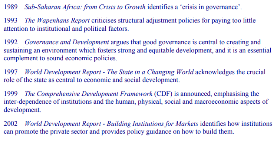
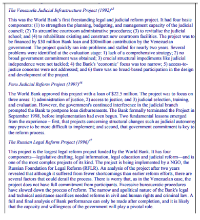

Role of the World Bank and IMF in the development and monitoring of international corporate governance
Introduction
Corporate governance ensures corporate success and sustainable economic growth through establishing economic policies, adherence of rules and laws as well as proper regulatory framework through which it is possible to mitigate corruption and improve trust of the public in long run (Davies, 2016) (Refer to appendix). The corporate governance is an effective mechanism and process through which the corporations are directed and controlled. The structure of the governance and principles of the organisations are effective in this regard to distribute the rights and responsibilities among different participants in the corporation (Mundy and Verger, 2015).
Through this study, it is possible to understand the role of the World Bank and IMF in monitoring and improving the corporate governance in the society so that it is possible to improve the market condition, restructuring society with proper rules and legislations and reduce corruption. The International Monetary Fund (IMF) and world bank in this regard focuses on managing corporate governance through taking different initiatives to enhance economic growth and empower the social communities positively for future sustainable development (Mundy and Verger, 2015).
Existing issues in financial institutions
The financial institutions face several issues in managing good corporate governance and in this context the major issues are related to lack of transparency and accountability for which the problem of investment instability may arise. The good corporate governance protects the interest of depositors and other investors in the commercial banks; however, it is difficult to manage good corporate governance without transparency and accountability (Buckley and Strange, 2015). For this issue, public confidence also may hamper which further increases the issue of lack of credibility and integrity. In addition to these, the financial institutions are uniquely vulnerable to liquid stock and it further results in financial instability due to lack of management of supervision, regulations. It is the responsibility of the financial institutions to build trust and protect the depositors but nowadays the incident of corruption is increasing rapidly (The World Bank, 2016). Hereby it is necessary to improve the good corporate governance so that it is possible to mitigate the incident of corruption mainly in the financial sectors across the world. Lack of corporate structure and maintaining the legislative framework further raises the issue of efficiency and effectiveness n the financial sectors (Larionova, 2016). Lack of fairness in information sharing as well as providing irrelevant information are also other issue which needs to be resolved so that it is possible to improve efficiency in the financial sectors. In this regard, the World Bank and IMF play a crucial role in monitoring the corporate governance as well as contribute efficiently to improve the good corporate governance so that it is possible to achieve the aim of social development and sustainable economic growth (Khan, Serafeim and Yoon, 2016).
Role of World Bank in improving corporate governance
As per the definition of corporate governance by the World Bank, it is the practice of effective management of the country for successful development of economic and social resources (The World Bank, 2016). Through finance, the World Bank aims at sustainability of economic development through transparent rules and legal framework (R.B. Tricker and R.I., Tricker, 2015). The World Bank aims at improving good governance for social and economic development where the fundamental objective of World Bank is poverty reduction in the developing world. The World Bank follows three aspects of corporate governance which are the form of political regime, the capacity of the government to formulate, design and implement the policies and functions in the society and the process of exercising the management of the social and economic resources of the country for sustainable development in near future (R.B. Tricker and R.I., Tricker, 2015).
The World Bank plays a significant role in developing good corporate governance in the society where the demand for good corporate governance is increasing year to year where the aim of the corporate firms is to improve their performable and provide positive impacts in the society by increasing resource utilisation and improving capacity (The World Bank, 2016). Financial stability and economic growth as well as social development are the main aim of maintaining the corporate governance in the society where the World Bank also focuses at sustainability of the banking sectors and enhance the growth of pension fund and insurance companies (The World Bank, 2016). Corporate governance in the World Bank is therefore helpful for the society as it helps micro financing as well as it provides a scope for better investment and expansion of the financial institution across the globe where the major focus of the World Bank is to reduce the issue of poverty (Polak and Boughton, 2016). Hereby, there is a great impact of managing corporate governance in the World Bank and the World Bank Also takes several initiatives in managing corporate governance in the society. The role of World Bank in managing corporate governance is significant as it improves governance in micro financing, financial cooperatives and increasing investment (R.B. Tricker and R.I., Tricker, 2015). Moreover, the World Bank plays a crucial role in strengthening the capacity of regulators, enhancing reforms in the financial sectors and improving corporate governance in the banking institutions including public and commercial banks (Haan and Vlahu, 2016). The initiatives taken by the World Bank are therefore helpful to monitor corporate governance by developing legal and regulatory framework and maintaining transparency and accountability.
In this regard, the World Bank has taken several initiatives to improve the corporate governance in the banking and financial institutions as a whole (Mundy and Verger, 2015). The initiatives are taking appropriate legal framework, maintaining transparency and information, accessing information fairly and reinforcing accountability. Moreover, the World Bank tries to focus on Public sector management through effective management and Structural reforms for monitoring corporate governance (R.B. Tricker and R.I., Tricker, 2015). In addition to these, Quality of budget and public investment as well as efficiency management is also the initiatives taken by World Bank for improving corporate governance and sustainability. The World Bank also focuses on developing competitive market economy, equity in public expenditure, enhancing cooperation between governments and employees, revenue mobilisation and property rights and rule based governments (Haan and Vlahu, 2016).
Through the above mentioned initiatives, the World Bank tries to manage their corporate governance so that the issue of corruption and mismanagement can be resolved properly. Hereby, the World Bank plays a crucial role in monitoring the progress of corporate governance and in this regard the structural reforms in the banking sector is helpful to enhance the implementation of best practices for managing the corporate governance in the society for ensuring social develop and sustainable economic growth (Mundy and Verger, 2015). In addition to these, the private sector investment depends on the rule of the government, public knowledge and policies and in this regard the World Bank focuses on managing transparency for decision making, budgetary control and procurement process. In this regard, through managing transparency, the World Bank aims at improving trust ad loyalty among the financial sectors where the employees can share authentic information fairly with each other (Haan and Vlahu, 2016). It is hereby beneficial for reducing the waste and corruption in the financial sector. This is another effective contribution of World Bank for enhancing corporate governance in the society as well as it provides a scope to improve accountability and ensures that the transactions are made fairly (Mundy and Verger, 2015).
The World Bank defines good corporate governance as increasing public accountability and transparency, reforming local government, increasing civil society’s participation, respecting human rights and improving the environment (Iqbal, Strobl and Vähämaa, 2015). The World Bank also tries to maintain good corporate governance in order to achieve sustainable economic growth, reduce corruption in the society, decentralisation and following the rules and anti corruption measures (The World Bank, 2016).
Key milestones in the World Bank for managing good governance
The above picture is effective to understand the initiatives of the World Bank in order to monitor the good corporate governance in order o meet the aims of reducing corruption and improving economic development. The world development re[ports is effective for building cooperation and corporate relationship among the public and private institutions and in this regard the World Bank plays a crucial role in managing corporate governance and enhancing economic growth and social development (The World Bank, 2016). The comprehensive development framework is also beneficial for emphasising the physical, human, social and macroeconomic aspects of development which provides a scope to manage corporate governance ad develop the society with transparency and accountability (Kanagaretnam, Lobo and Whalen, 2007). World develop report and the government focuses ion the sustainable economic growth and equitable development so that there will be no issue of corruption and inequality in the society.
Legal reforms in the World Bank also plays a significant role in enhancing the performance of the corporate firm where the World Bank tries to build strong relationship between the legal reforms and economic development so that managing corporate governance can be possible (The World Bank, 2016). Through corporate governance, the World Bank aims at increasing the value of entity as well as improving efficiency and increasing innovation and creativity which are effective in the recent years to maximise the competitive advantage and gain high market share (Ban, Seabrooke and Freitas, 2016). Transparency and accountability of the business through managing legal rules and regulations are also important where the company can improve trust and loyalty among all the stakeholders as well as build strong corporate relationship so that all of them can contribute in achieving the pre-specified goals and objectives (IEO, 2007). Good corporate governance of the World Bank is effective for minimising the wastage, corruption, mismanagement and the risk where the overall financial sector has the opportunity to run their business activities without any ethical consideration which is possible through maintaining the industrial standard. It also ensures that the organisations fulfil the requirements of the stakeholders by maximising their values and welfare (Malik and Stone, 2015). Hereby, managing corporate governance plays a crucial role where the World Bank has taken several initiatives for monitoring issue the corporate governance and developing effective measures to resolve the issue so that the values for overall society can be maximised (The World Bank, 2016).
Through the Venezuela Judicial Infrastructure project, Peru Judicial Reform project and Russian Legal reform project, it is possible to restructure the legal framework where the financial institutions can improve their corporate governance practice so that transparent and equitable system in the society can be maintained (Cuomo, Mallin and Zattoni, 2016). The World Bank also focuses on anti corruption measures for minimising the fraud and corruption in the financial projects (ArAs, 2016). Moreover, it helps to improve operational work for mainstreaming the corruption considerations and supporting the international efforts to fight against corruption. Hereby, good corporate governance is the result of the initiatives taken by the World Bank where the strategies of the World Bank plays a crucial role for overall financial sector across the globe to improve anticorruption measures, enhance economic development and secure social growth.
Role of IMF in enhancing corporate governance
According to the definition of corporate governance given by IMF is that the good corporate governance is the key to economic success by ensuring regulatory framework, greater opportunity for economic policies and social developing, adherence of rules and reduction of corruption in the society (International Monetary Fund, 2018). IMF in this regard also plays crucial role in enhancing the concept of good corporate governance IMF supported lending, economic reforms, greater transparency and good public expenditure control (Weber, Diaz and Schwegler, 2014). The IMF also provides technical assistance and anti corruption legal framework for improving the corporate governance and the initiatives taken by the IMF are therefore beneficial for managing good corporate governance. The IMF promotes good corporate governance by focusing on two ways. On is the management of the public resources through the structural reforms of public institutions and the other way is successful development and maintenance of transparent and stable economic as well as regulatory framework for enhancing private sector activities.
The IMF in this regard contributes in the society through taking several initiatives so that good corporate governance can be maintained so that it is possible to improve economic growth and sustainable social development. In this regard, the IMF encourages the member countries to improve accountability as well as transparency in disclosing the documents and this is called transparency policy (Abdallah, Hassan and McClelland, 2015). Without managing transparency, it is not possible for the IMF to manage good corporate governance and in this regard both transparency and accountability provides an opportunity to mitigate the issue of corruption in the society. In addition to these, the transparency principle are also effective for managing the fiscal and monetary policies of the IMF and apart from that, the IMF maintains international transparency standard through Standards and Codes initiatives (International Monetary Fund, 2016).
Management of natural resource wealth is also another great initiative taken by IMF where it aims at maintaining the public resources and utilising it successfully (Cheng, Ioannou and Serafeim, 2014). The IMF also emphasises on the public financial management through the Public Expenditure and Financial Accountability program which further helps in improving the performance of public finance. On the other hand, the INMF also contributes in the international efforts though money laundering and financing of terrorism activities for providing technical assistance of the implementation of legal and regulatory framework. Additionally, the IMF has taken international initiatives through Anti Corruption Working Group, Stolen Asset Recovery and Extractive Industries Transparency Initiatives which are helpful for managing good corporate governance and enhancing sustainable economic development (Khan, Serafeim and Yoon, 2016).
Conclusion
Both the IMF and the World Bank play a significant role in managing good corporate governance so that it is possible to achieve future sustainable economic growth and social development, both the institutions focus on the managing transparency and accountability through taking different initiatives so that the issue of corruption in the financial sectors can be resolved in long run. Moreover, building strong corporate relationship with all the investors and clients as well as sharing relevant information fairly are helpful for both the institutions IMF and the World Bank to enhance the performance of the financing institutions and manage good corporate governance. Through the strategic planning of the institutions, it is possible to resolve the issues of corruption, risk, mismanagement of the financial operations and the uncertainty of getting the return on investment. The anti corruption measures as well as the initiatives for money laundering and repayment of stolen asset recovery also provide an opportunity to make the financial system transparent. Good corporate governance is therefore necessary in the recent years for mitigating the existing issues in the financial sector and in this regard both the institutions IMF and the World Bank play a crucial role in enhancing transparent and accountable practice so that it is possible to improve and monitor the progress for sustainable economic growth and social development through managing good corporate governance.